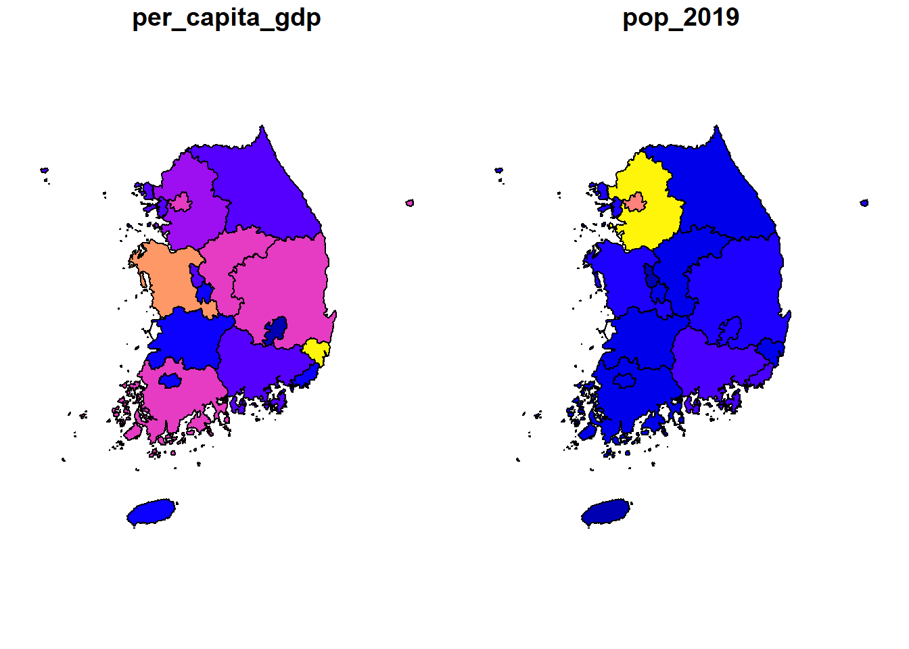
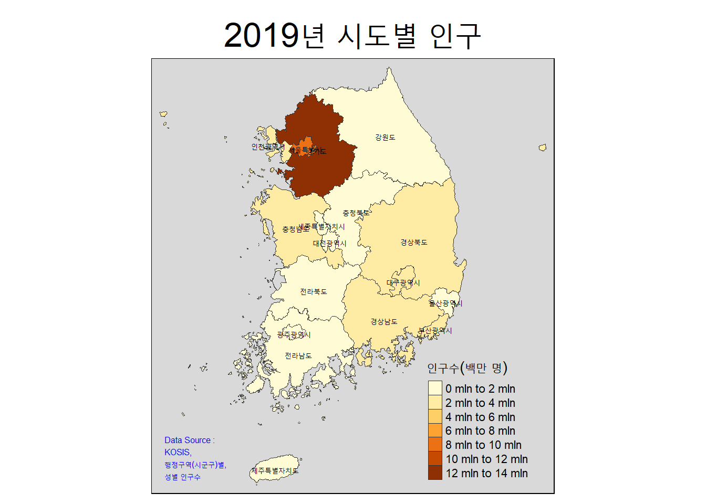
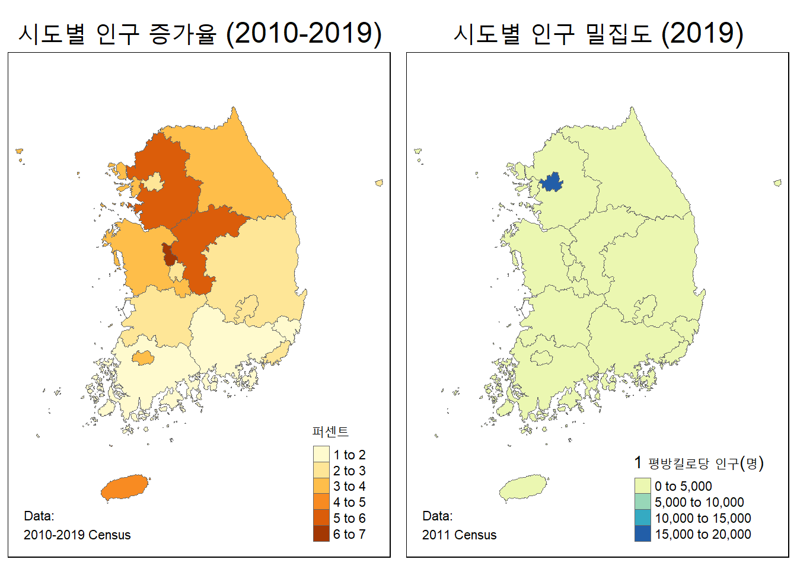
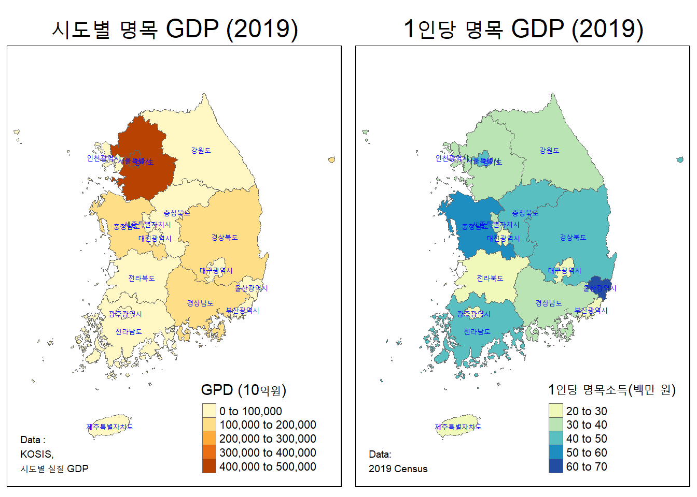
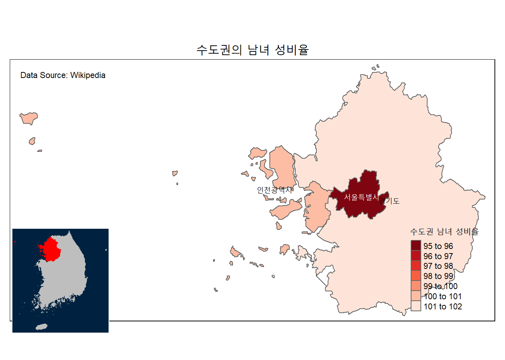
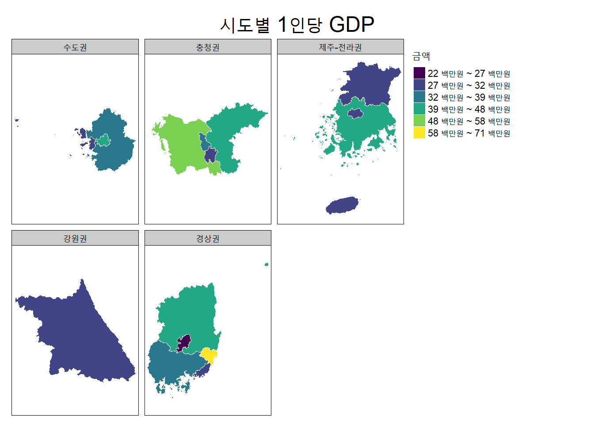
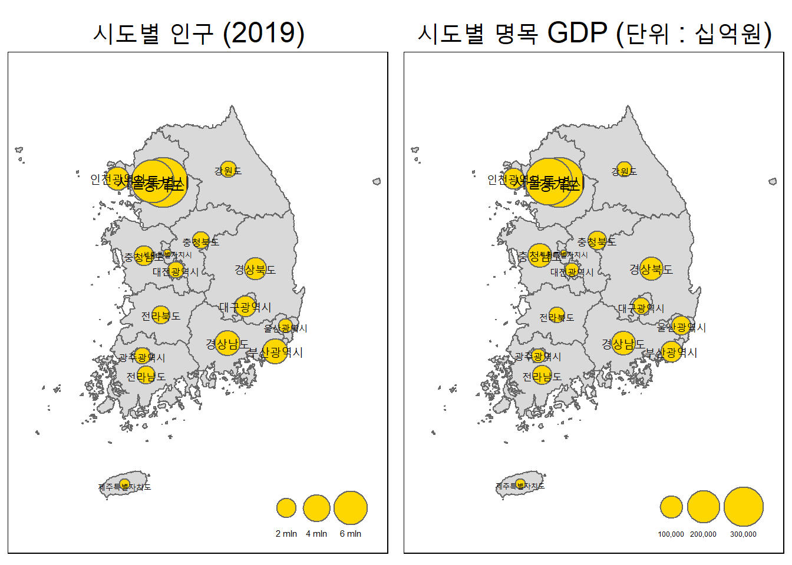
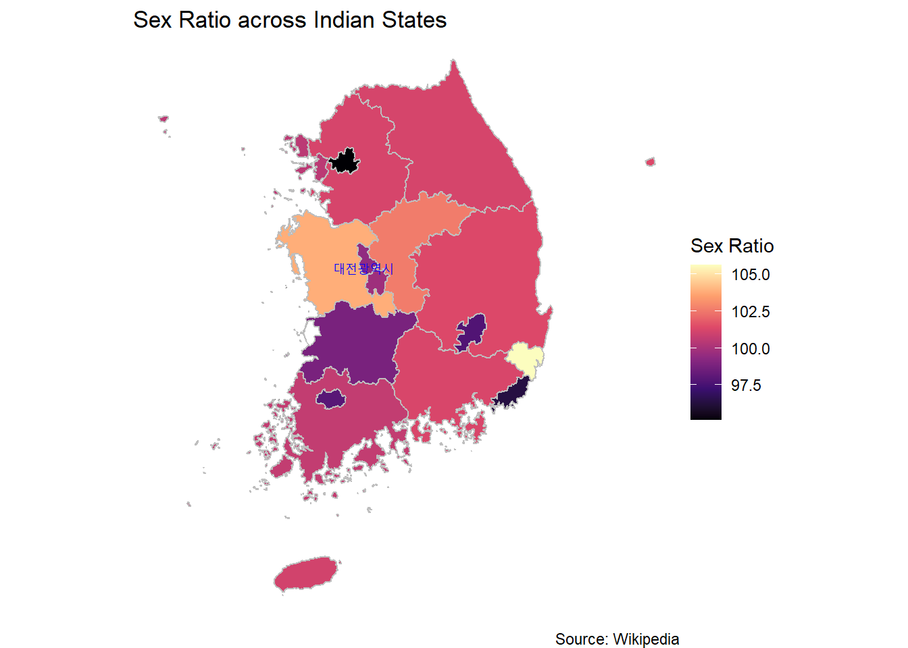
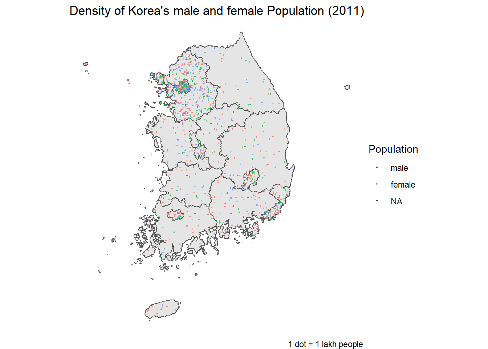

15.3 정적 지도
많은 R 패키지가 매력적인 대화형 그리고 애니메이션 맵을 쉽게 만들 수 있도록 만들었지만 효과적인 정적 맵의 필요성을 없애지는 못했다. 이 장에서는 R의 base 패키지, tmap 패키지 그리고 ggplot2 패키지에서 정적 맵을 만드는 방법을 살펴 보기로 한다.
Note :
tmap패키지와ggplot2패키지는 지도를 만드는 데 가장 많이 사용되는 두 가지 패키지이지만 유일한 옵션은 아니다.
cartography 패키지는 특히 비례적인 기호에 포함된 단계 구분도와 같은 특정 종류의 지도를 위한 또 다른 흥미로운 도구이다.
패키지 vignette와 cheat sheet를 참조하기 바란다.
{kind=link}
15.3.1 기본 플로팅
이전 장의 geometry 플롯에서 설명했듯이 sf 패키지는지리 데이터를 시각화하기 위한 **plot()** 함수를 제공한다.
개체 자체를 플로팅하면 각 속성에 대해 하나씩 faceted 플롯의 그리드가 생성될 것이다. 한 변수를 선택하면 단일 맵이 생성된다..
library(tidyverse)
library(sf)15.3.2 우리나라의 1인당 GDP와 인구수
per_capita_gdp 컬럼과 pop_2019 컬럼을 시도별로 시각화해 보자.
simp_KOR_sf <- readRDS("data/simp_KOR_sf.rds")
plot(simp_KOR_sf[c('per_capita_gdp', 'pop_2019')])
이 플롯은 기본지도를 얼마나 빠르고 쉽게 플로팅 할 수 있는지 보여 주지만 이 기본적인 구분 단계도가 효과적인 시각화가 아닐 수 있는 이유가 있다. 이 장이 끝날 무렵에 이 경우에 어떤 유형의 시각화가 더 효과이며, 그 이유를 명확히 알게 될 것이다.
15.3.3 테마형 지도 (tmap)
Martijn Tennekes의 [tmap ] https://github.com/mtennekes/tmap) 패키지는 한동안 R에서 매핑을위한 표준 패키지였다. “thematic”이라는 이름에서 알 수 있듯이, 특히 단계 구분도에 적합하지만 광범위한 지리 공간 시각화를 생성 할 수 있다.
지리 공간 데이터에 맞는 ggplot2 패키지 스타일의 구문 을 제공한다. ggplot2 패키지와 마찬가지로 플롯에 순차적으로 레이어를 추가하는 것을 강조하고 있다. 공간 데이터 프레임을 tm_shape() 함수에 전달할 수 있다. 마치 데이터 프레임을 ggplot () 함수에 전달하는 것과 같다.
또한 sf 패키지의 공간 데이터 프레임도 데이터 프레임이기 때문에 특정 특징(아래의 “Andaman & Nicobar Islands”와 같은)을 필터링하고 개체를 tm_shape() 체인으로 직접 파이핑할 수 있다.
LEARN MORE:
지도의 다른 측면을 조정하는 방법에 대한 가이드는 여러 가이드와 vignette를 포함하는 [문서] (https://github.com/mtennekes/tmap)에서 찾을 수 있다.
union 영역을 필터링 한 후 다음의 단계 구분도는 지역별 경제 활동의 척도인 인도의 GDP 밀도를 매핑하고 있다. 여기에서 평방 킬로미터 당 명목 GDP 단위로 측정한 GDP 밀도(density)는 명확한 중간 점이 없으므로 발산(diverging) 또는 범주형 색상 척도와 반대되는 순차적 색상 척도가 필요하다.
library(tmap)simp_KOR_sf에 있는 지리공간 데이터와 속성 데이터를 이용하여 시각화한다.
tm_shape()함수를 기본 플롯팅을 한다.tm_fill()함수를 이용하여col인수로 인구수를 나타내는pop_2019컬럼을 지정하고,title인수에 범례의 제목으로인구수(천명)을 지정한다.tm_borders()함수를 이용하여 시도 경계선의 굵기를 정한다.tm_text로 시도별 라벨을, 그리고tm_style()함수로 바탕색을 지정한다.tm_layout()함수를 이용하여 플롯의 세부 내용을 지정한다.tm_credits()함수로 데이터 출처를 기록한다.
simp_KOR_sf %>%
tm_shape() +
tm_fill(col = "pop_2019", title = "인구수(백만 명)") +
tm_borders(lwd = 0.3) +
tm_text("CTP_KOR_NM", size = 0.55, col="black") +
tm_style("gray") +
tm_layout(
main.title = "2019년 시도별 인구",
main.title.position = c("center"),
main.title.size = 2,
legend.position = c("right", "bottom")
) +
tm_credits("Data Source :\nKOSIS,\n행정구역(시군구)별,\n성별 인구수", size=0.5, col = "blue", position = c("left", "bottom"))
LEARN MORE:
지도를 포함하여 데이터 시각화에서 색상을 사용하는 것에 대한 많은 이론과 조언이 있다. 특히 Wilke의 책에는 색조 및 색상 함정에 대한 훌륭한 내용이 있다.
15.3.3.1 tmap개체의 정렬
tmap 패키지에는 여러 tmap 객체를 나란히 정렬하는 데 유용한 tmap_arrange() 함수도 있다.
예를 들어, 더 공정한 분포를 얻기 위해 작은 union 지역을 필터링하면 인구 증가 및 밀도의 tmap 객체를 별도로 만들 수 있다. 그런 다음 비교를 위해 나란히 배열할 수 있다.
인구 증가 및 인구 밀도와 같은 값인 GDP 밀도도 표준화된 데이터이므로 단계 구분도에 적합하다.
CTP_sf: 1 평방 킬로미터 당 인구수를 구하여density_km2변수에 대입한다.growth_CTP: 지난 10년간(2010 ~ 2019)의 평균 인구성장률에 대한 지도정보density_km2: 1평방 킬로미터 당 인구밀도
growth_CTP <- tm_shape(simp_KOR_sf) +
tm_fill(col = "decadal_growth", title = "퍼센트") +
tm_borders(lwd = 0.5) +
tm_layout(
main.title = "시도별 인구 증가율 (2010-2019)",
main.title.position = c("center"),
main.title.size = 1.5,
legend.position = c("right", "bottom")
) +
tm_credits("Data:\n2010-2019 Census", position = c("left", "bottom"))
density_CTP <- tm_shape(simp_KOR_sf) +
tm_fill(col = "density_km2", title = "1 평방킬로당 인구(명)",
palette = "YlGnBu") +
tm_borders(lwd = 0.5) +
tm_layout(
main.title = "시도별 인구 밀집도 (2019)",
main.title.position = c("center"),
main.title.size = 1.5,
legend.position = c("right", "bottom")
) +
tm_credits("Data:\n2011 Census", position = c("left", "bottom"))
tmap_arrange(growth_CTP, density_CTP)
또 다른 예로, 우리나라의 시도별 명목 GDP(nominal_gdp_bill_won)와 1인당 명목 GDP(per_capita_gdp)를 시각화해 보자.
gdp_KOR <- tm_shape(simp_KOR_sf) +
tm_fill(col = "nominal_gdp_bill_won", title = "GPD (10억원)") +
tm_borders(lwd = 0.5) +
tm_text("CTP_KOR_NM", size = 0.5, col="blue") +
tm_layout(
main.title = "시도별 명목 GDP (2019)",
main.title.position = c("center"),
main.title.size = 1.5,
legend.position = c("right", "bottom")
) +
tm_credits("Data :\nKOSIS,\n시도별 실질 GDP", size = 0.6, position = c("left", "bottom"))
pcg_KOR <- tm_shape(simp_KOR_sf) +
tm_fill(col = "per_capita_gdp", title = "1인당 명목소득(백만 원) ",
palette = "YlGnBu") +
tm_borders(lwd = 0.5) +
tm_text("CTP_KOR_NM", size = 0.5, col="blue") +
tm_layout(
main.title = "1인당 명목 GDP (2019)",
main.title.position = c("center"),
main.title.size = 1.5,
legend.position = c("right", "bottom")
) +
tm_credits("Data:\n2019 Census", size = 0.6, position = c("left", "bottom"))
tmap_arrange(gdp_KOR, pcg_KOR)
LEARN MORE:
Axis Maps의 지도 제작 가이드는 지리 공간 데이터와 관련된 데이터 표준화 문제를 직접적으로 다루고 있다.
15.3.4 삽입 지도(Inset Maps)
tmap은 특히 주 지도에 더 넓은 지리적 컨텍스트를 제공하는 작은 창을 포함하는 삽입 지도를 만드는 데 유용하다.
첫 번째 단계는 기본(base) 또는 본(primary) 지도를 만드는 것이다. 우리는 수도권의 남녀 성비율(main_sex)을 시각화하기로 한다.
NOTE :
tmap_tricks()함수의 한 가지 트릭은 팔레트 이름 앞에-를 배치하여 색상 스케일을 반전하는 것이다. 이것은 성별 비율이 감소함에 따라 우리의 관심이 증가해야 하기 때문에 의미가 있다.
다음으로 더 넓은 지리적 컨텍스트를 제공하는 더 작은 삽입 맵을 만들었다. 작은 지도의 경우 더 큰 지도에서 수도권 지역을 부각시키기 위해 표시한다.
이를 위해 먼저 속성을 지역별(type)로 그룹화했다. 동일한 dplyr 구문을 사용하여 18개 속성을 2개 지역으로 줄일 수 있다.
이러한 2개의 지역 속성은 개별 하위 구성 요소의 “합계”를 반영하는 geometry를 갖는다. 이런 종류의 기하학적 연산은 st_unify() 함수를 사용하여 쉽게 수행할 수 있다는 것이 매우 흥미롭다.
시도별 성비율
sex_ratio컬럼을 이용한다.수도권 지역의 남녀 성비율 지도 정보 생성 (
main_sex)
main_sex <- simp_KOR_sf %>%
filter(type == "수도권" ) %>% # 수도권 선택
tm_shape() +
tm_fill(col = "sex_ratio", title = "수도권 남녀 성비율", palette = "-Reds") +
tm_borders(lwd = 1) +
tm_text('CTP_KOR_NM', size = 0.75) +
tm_layout(
main.title = "수도권의 남녀 성비율",
main.title.position = c("center"),
main.title.size = 1.2,
legend.position = c("right", "bottom")
) +
tm_credits("Data Source: Wikipedia", position = c("left", "top"))- 우리나라 전체 지도중 수도권 지역을 표시하는 지도 정보 생성 (
inset_KOR)
type_sf <- simp_KOR_sf %>%
group_by(type) %>%
summarise(pop = sum(pop_2019))## `summarise()` ungrouping output (override with `.groups` argument)inset_KOR <- simp_KOR_sf %>%
# filter(type == "수도권") %>%
mutate(CT = ifelse(type == "수도권", TRUE, FALSE)) %>%
tm_shape() +
tm_fill(col = "CT", palette = c("grey", "red")) +
tm_style("cobalt") +
tm_legend(show = FALSE)일단 기본 맵과 삽입 맵이 있으면 몇 가지 시행 착오를 거쳐 올바른 배치를 위해 다음 구문으로 결합할 수 있다.
library(grid)
main_sex
print(inset_KOR, vp = viewport(0.12, 0.22, width = 0.2, height = 0.6))
15.3.5 Faceted 지도
tmap은 패싯 맵(faceted map) 또는 작은 조각 지도들의 생성도 지원한다. 그것들은 상당히 적은 수의 수준을 갖는 속성에 유용 할 수 있다. 예를 들어 몇 년 동안의 인구 데이터가 있다면 시간에 따른 변화 추이를 보여줄 수 있다. 이 경우 region은 패싯에 유용한 변수이다. region별로 지도를 분할하면 전체 지역에 대한 하나의 이미지를 보는 것보다 잘 비교가 될 수 있다.
free.coords 인수는 패싯 맵 영역만 표시할지 아니면 원본 맵에서 패싯의 위치를 강조 표시할지 여부를 제어한다.
region에 내재된 순서는 없지만 순서를 부과하는 것이 유용하다. 다음에서는 “Northern”에서 시작하여 대략 시계 반대 방향으로 패싯을 정렬했다. 이렇게 하려면 먼저 region을 정렬 된 요소로 만드는 것이 도움이된다.
플롯을 만들기 전에 분포의 특성에 주의를 기울이는 것도 중요하다. 인도에서는 1 인당 GDP가 Goa 및 Delhi와 같은 이상치로 인해 크게 왜곡되었다. 이 데이터를 선형 스케일로 매핑하면 대부분의 상태가 동일한 색상이 될 수 있다. 이것은 대량의 데이터에서 중요한 차이점을 숨길 것이다.
기울어진 데이터가있는 경우 로그 변환(logarithmic transformation)을 수행하는 것이 도움이 될 수 있다. 색상 구간이 같지 않기 때문에 범례에 더 신중한 해석이 필요할 수 있지만 이렇게하면 맵에 더 큰 색상 차별화가 추가될 수 있다.
LEARN MORE:
데이터 시각화 범주에서 통계적 변환에 대한 자세한 내용은 Wilke 저서의 섹션 8.2를 참조하기 바란다.
우리나라의 수도권과 지방의 1인당 GDP를 패싯 맵으로 시각화해 보자.
# create custom labels for log scale : 1인당 명목 GDP 구간(6 단계)
gdp_seq <- 10 ^ (seq(1.34, 1.85, length.out = 7))
gdp_vec <- paste(round(gdp_seq), "백만원")
my_labels = vector(mode = "character", length = 6)
for (i in seq_along(1:6)) {
my_labels[i] = str_c(gdp_vec[i], " ~ ", gdp_vec[i + 1])
}simp_KOR_sf %>%
mutate(
log_pc = log10(per_capita_gdp)) %>%
tm_shape() +
# CTP_fac = factor(CTP_KOR_NM, levels = simp_KOR_sf$CTP_KOR_NM)) %>%
# filter(!state_ut %in% c("Andaman & Nicobar Islands",
# "Lakshadweep"))
tm_borders(lwd = 0.5, col = "white") +
tm_fill(col = 'log_pc', title = '금액', palette = "viridis",
labels = my_labels) +
tm_facets(by = "type", nrow = 2, free.coords = TRUE) +
tm_layout(
main.title = "시도별 1인당 GDP",
main.title.size = 1.5,
main.title.position = "center",
legend.outside.position = "right"
)
위의 예에서log10() 변환은 더 높은 수준의 차별화를 달성하였다. 예를 들어 Goa와 Delhi의 작은 밝은 노란색 점, Uttar Pradesh와 Jharkhand의 파란색, Central India와 Rajasthan의 청록색, South India의 녹색을 구분할 수 있다.
NOTE :
tm_facets()의free.coords인수는TRUE로 설정되어 있다. 만일 ’FALSE’로 설정된 경우 인도의 전체지도가 지정된 region이 강조 표시된 각 facet에 표시된다.
15.3.6 비례 기호 지도(Proportional Symbols Maps)
지금까지 우리의 모든 맵은 단계 구분도였다. 데이터는 밀도, 백분율 또는 비율과 같은 방식으로 항상 표준화 되었기 때문에 편리했다. 그러나 단계 구분도는 원시 카운트 데이터에 적합하지 않다. 인구와 같은 카운트 데이터를 처리 할 때 비례 기호 지도(또는 ’bubble map’이라고도 한다.)가 더 효과적 일 수 있다.
운 좋게도 tmap 패키지는 이러한 유형의 시각화에도 적합하다. 여기에서 기호 (일반적으로 ‘원’)는 원래 지리 위에 묘사된 변수에 비례하여 그려진다. 이런 종류의 지도를 사용하여 인구와 명목 GDP 데이터를 모두 시각화 할 수 있다.
우리나라의 시도별 인구수와 명목 GDP를 비례 기호 지도로 시각화해보자.
먼저 인구수(pop_2019) 비례 기호 지도를 생성한다.
pop_KOR_bubbles <- simp_KOR_sf %>%
tm_shape() +
tm_polygons() +
tm_bubbles(col = "gold", size = "pop_2019",
scale = 3, title.size = "") +
tm_text("CTP_KOR_NM", size = "pop_2019", root = 5,
legend.size.show = FALSE) +
tm_layout(
main.title = "시도별 인구 (2019)",
main.title.position = c("center"),
main.title.size = 1.5,
legend.position = c("right", "bottom")
)이어서 시도별 명목 GDP(nominal_gdp_bill_won) 비례 기호 지도 정보를 생성한다.
gdp_KOR_bubbles <- simp_KOR_sf %>%
tm_shape() +
tm_polygons() +
tm_bubbles(col = "gold", size = "nominal_gdp_bill_won",
scale = 3, title.size = "") +
tm_text("CTP_KOR_NM", size = "nominal_gdp_bill_won", root = 5,
legend.size.show = FALSE) +
tm_layout(
main.title = "시도별 명목 GDP (단위 : 십억원)",
main.title.position = c("center"),
main.title.size = 1.5,
legend.position = c("right", "bottom")
)이제 생성된 2 개의 비례 기호 지도를 정렬한다.
tmap_arrange(pop_KOR_bubbles, gdp_KOR_bubbles)## Legend labels were too wide. Therefore, legend.text.size has been set to 0.46. Increase legend.width (argument of tm_layout) to make the legend wider and therefore the labels larger.## The legend is too narrow to place all symbol sizes.## Legend labels were too wide. Therefore, legend.text.size has been set to 0.38. Increase legend.width (argument of tm_layout) to make the legend wider and therefore the labels larger.## The legend is too narrow to place all symbol sizes.
비례 기호 지도는 기호의 최상위 레이어에 의해서만 가려진 원래 지리를 유지한다.
기호는 올바른 공간 배열을 유지하며 서로 관계에서 해석하기 쉽다. 그러나 원의 면적을 판단하는 것은 막대 그래프와 같은 비공간적 표현에 비해 더 어렵다.
15.3.7 ggplot2의 geom_sf
이 예제들이 tmap이 강력한 매핑 도구임을 보여 주었으면 한다. 동시에 geom_sf의 추가로 ggplot2 패키지는 또 다른 매력적인 옵션이 되었다.
ggplot2 패키지에는 tidy 데이터가 필요핟. sf 패키지에서 정의된 공간 데이터 프레임도 데이터 프레임이므로 ggplot2를 사용하여 sf 개체를 시각화할 수 있다고 예상할 수 있다. 최근 ggplot2 패키지는geom_sf () 함수로 sf 개체에 대한 지원을 추가했다. geom_sf() 함수의 주요 장점은 tidyverse 패키지 사용자가 이미 ggplot2 패키지와 더 넓은 애드온 패키지 생태계에 익숙하다는 것이다.
그러나 이것은 최근에 추가되었으므로 몇 가지 버그가 있을 수 있다. 예를 들어, 위의 facet이 있는 tmap 개체에서 free.coords = FALSE를 설정하면 전체 개체가 각 패싯에 플로팅될 수 있다. 현재,sf 기하학을 패싯화하는 것은 유사한 결과를 허용하기 위해 scales = "free"의 설정을 허용하지 않는 것 같다.
그럼에도 불구하고 ggplot2 패키지로 sf 개체를 시각화할 수있는 많은 이점과 사례가 있다. 예를 들어 ‘ggplot2’ 패키지 사용자는 데이터 프레임에서 aes()에 데이터를 매핑하고 플롯 위에 추가 데이터 프레임을 레이어링하는 과정에 익숙할 것이다. 동일한 워크 플로우가 sf 개체를 플로팅하는 데도 적용된다.
아래 플롯에서 주 이름 “Kerala”만을 지도에 추가하려고 한다. 우리는annotate () 함수로 이를 수행할 수 있었지만, 대신 (Kerala) 라는 주석을 달고자 하는 feature 만 포함하는 sf 객체 (데이터 프레임이기도 함)를 만들수 있었다.
그러나 이를 성공적으로 수행하려면 먼저 라벨을 표시할 지점을 알기 위해 Kerala 의 지리적 중심을 찾아야 한다. 중심, 버퍼 및 거리 계산과 같은 기하학적 연산에는 지리적 CRS(geographic CRS)가 아닌 투영된 CRS(projected CRS)가 필요하므로 아래에서st_transform ()을 사용하여 이를 수행한다.
지리적 CRS를 사용하면 st_centroid () 함수가 결과를 생성하지만 “st_centroid()가 경도/위도 데이터에 대해 정확한 중심을 제공하지 않는다”라는 경고를 생성한다. 이는 속성들이 geometry 전반에 걸쳐 일정하다고 가정하기 때문이다. 그러나 경도 사이의 거리는 주어진 위도에 따라 변경된다. (적도에서의 경도 사이의 거리와 북극에서의 경도 사이의 거리를 생각해보기 바란다.)
그러면 문제는 적절한 투영된 CRS를 선택하는 것이 된다. crs_data = rgdal :: make_EPSG()를 보면 수천 가지 옵션이 표시된다. EPSG.io에서도 ’인도’를 검색했다. 궁극적으로 우리는 UTM zone 43N이 Kerala를 포함하기 때문에 “# Kalianpur 1975 / UTM zone 43N”을 기록하는 EPSG 코드 24343의 CRS를 선택했다. (Projection Wizard도 발견할 수 있다.)
이 CRS를 사용하여 st_transform()을 사용하여 두 sf 개체를 동일한 투영된 CRS에 투영할 수 있었다. 이 작업이 완료되면 일반적으로 ggplot2 패키지에서 하는 것처럼 geom_text_repel() 함수를 사용하여 Kerala 레이블을 추가할 수 있다.
library(ggplot2)
library(ggrepel)남여 성비율(sex_ratio) 지리공간 데이터를 확인해 보자.
- 이미 투영된 CRS를 사용하고 있음을 알 수 있다.
각 feature들의 중심 좌표를 구한다.
proj_KOR_sf <- simp_KOR_sf %>%
# st_set_crs(24343) %>% # 이 부분이 누락되어 있었음
# st_transform(crs = 24343) %>%
mutate(
CENTROID = purrr::map(geometry, st_centroid),
COORDS = purrr::map(CENTROID, st_coordinates),
COORDS_X = purrr::map_dbl(COORDS, 1),
COORDS_Y = purrr::map_dbl(COORDS, 2)
)대전광역시 feature 정보를 선택한다.
dj <- proj_KOR_sf %>%
filter(CTP_KOR_NM == "대전광역시")시도별 남여 성비율 지도 정보에 “대전광역시” 라벨을 출력해 보자.
proj_KOR_sf %>%
# filter(!state_ut %in% c("Daman & Diu", "Dadra & Nagar Haveli")) %>%
ggplot() +
geom_sf(aes(fill = sex_ratio), lwd = 0) +
geom_sf(fill = NA, color = "grey", lwd = 0.5) +
scale_fill_viridis_c("Sex Ratio", labels = scales::comma, option = "A") +
labs(
title = "Sex Ratio across Indian States",
caption = "Source: Wikipedia"
) +
geom_text_repel(
data = dj,
mapping = aes(x = COORDS_X, y = COORDS_Y, label = CTP_KOR_NM),
color = "blue",
size = 3,
nudge_x = -1.5,
nudge_y = 0.5
) +
scale_y_continuous(NULL) +
scale_x_continuous(NULL) +
theme(plot.title = element_text(hjust = 0.5)) +
# remove graticules
coord_sf(datum = NA) +
theme_void()
15.3.8 점 밀도 지도(Dot Density Maps)
비례 기호 지도는 원시 개수 데이터에 대한 유일한 옵션이 아니다. 점 밀도 지도는 특히 정확한 데이터 값 대신 군집 및 지역 패턴을 찾는 것이 목표인 경우 카운트 데이터를 공간적으로 시각화하는 효과적인 도구가 될 수 있다.
아래에서는 각 시도별 남성과 여성 인구를 비교하는 점 밀도 플롯을 만들었다.
이를 위해 먼저 tidy 데이터 형식과 남성인구 및 여성인구 데이터를 ‘gather ()’ 하는데서 시작한다.
그런 다음 st_sample () 함수를 사용하여 각 관측 값에 대한 시도별 남성과 여성 인구 데이터를 기반으로 샘플 포인트를 그린다.
이러한 유형의 시각화는 지구와 같은 소규모 관리 수준의 데이터가 있는 경우 훨씬 더 효과적이다.
대신, 우리는 시도 수준에서 샘플링하기 때문에 실제 인구 밀도와 반대되는 위치에 점이 배치된다.
- 시도별 지역명의 지리공간 데이터를 추출한다.
# save geometry
proj_KOR_geometry <- proj_KOR_sf %>% dplyr::select(CTP_KOR_NM) # 지역명의 지리공간 데이터- wide format을 long format으로 변환한다. 그리고 점 정보를 생성한다.
# gather data and rejoin geometry
pop_KOR_gathered <- proj_KOR_sf %>%
st_set_geometry(NULL) %>%
dplyr::select(CTP_KOR_NM, pop_male_2019, pop_female_2019, pop_2019) %>%
gather(key = "pop", value = "count", -CTP_KOR_NM) %>%
arrange(CTP_KOR_NM) %>%
left_join(proj_KOR_geometry) %>%
st_as_sf()## Joining, by = "CTP_KOR_NM"# create a list of male and female populations
pop_KOR_split <- pop_KOR_gathered %>%
split(.$pop)
# draw 1 dot
generate_KOR_samples <- function(data) {
st_sample(data, size = round(data$count / 1e5))
}
# generate samples for each and combine
points_KOR <- map(pop_KOR_split, generate_KOR_samples)
points_KOR1 <- imap(points_KOR, ~st_sf(tibble(
pop = rep(.y, length(.x))),
geometry = .x))
points_KOR2 <- do.call(rbind, points_KOR1)
# group points into multipoints
points_KOR3 <- points_KOR2 %>%
group_by(pop) %>%
summarise()## `summarise()` ungrouping output (override with `.groups` argument)- 시각화 한다.
# plot with ggplot
points_KOR3 %>%
ggplot() +
geom_sf(data = simp_KOR_sf) +
geom_sf(aes(color = pop, fill = pop),
size = 0.4, alpha = 0.6) +
scale_fill_discrete("Population", labels = c("male", "female")) +
labs(
title = "Density of Korea's male and female Population (2011)",
caption = "1 dot = 1 lakh people"
) +
theme(plot.title = element_text(hjust = 0.5)) +
coord_sf(datum = NA) +
theme_void() +
guides(color = FALSE)
또한 다음 장에서 볼 수 있듯이 이것은 시각화의 한 예이다. 상호 작용 기능을 추가할 수도 있다.
LEARN MORE :
R에서 도트 밀도 플롯을 생성하는 방법에 대한 자세한 내용은 Tarak 및 Paul Campbell의 우수한 블로그를 참조하기 바란다.